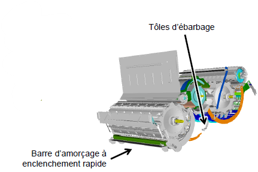

| Plaque d'obturation de la trape à pierre | Non | Non |
| Barre d'amorçage | Si nécessaire | Si nécessaire |
| Contre-batteur | Court/mixte | Céréales à petits grains/mixte |
| Plaques d'obturation du batteur | Non | Non |
| Tôles d'ébarbage | Si nécessaire | Si nécessaire |
| Plage de régime du batteur | Haut s'il est équipé d'un entraînement de battteur à deux vitesses | Haut s'il est équipé d'un entraînement de battteur à deux vitesses |
| Régime du batteur (tr/min) | 750-950 | 750-950 |
| Ecartement du contre-batteur (mm) | 2-12 | 2-12 |
| Dessin du batteur | Figure 1. Batteur série T
| Figure 2. Batteur série W
|